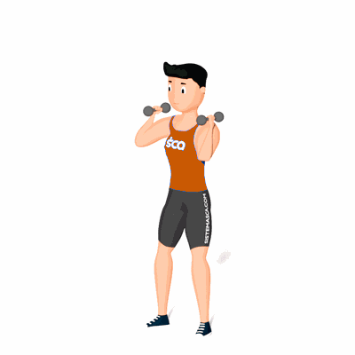

Dumbbell Thruster

Esse exercício desenvolve a força e a coordenação por conta da longa linha de ação do propulsor associada à dificuldade de controlar dois halteres.
Ficha Técnica
Tipo: CrossFit
Grupo Muscular: Corpo
Aparelho: Nenhum
Músculos: Nenhum
Como realizar
- Pés afastados na largura dos ombros e dumbbells sobre os ombros;
- Flexione o quadril projetando para baixo e para trás, abaixo da linha do joelho, mantendo a curvatura lombar;
- Os joelhos devem manter-se alinhados com os pés;
- Estenda rapidamente o quadril e joelhos, acompanhados dos braços que empurram os dumbbells acima da cabeça.
 RC STORE
RC STORE